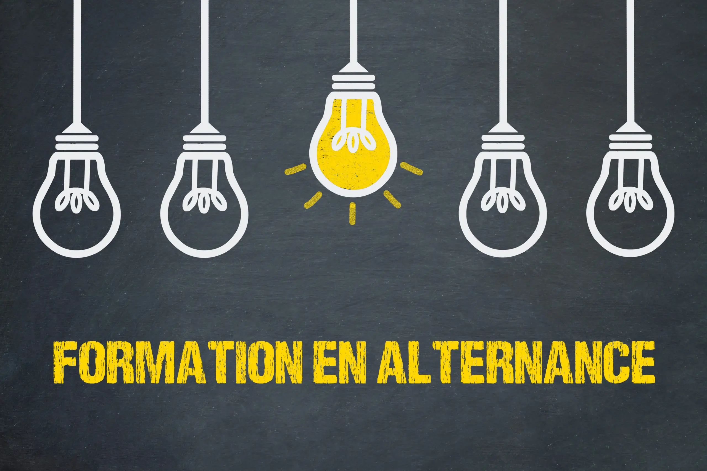
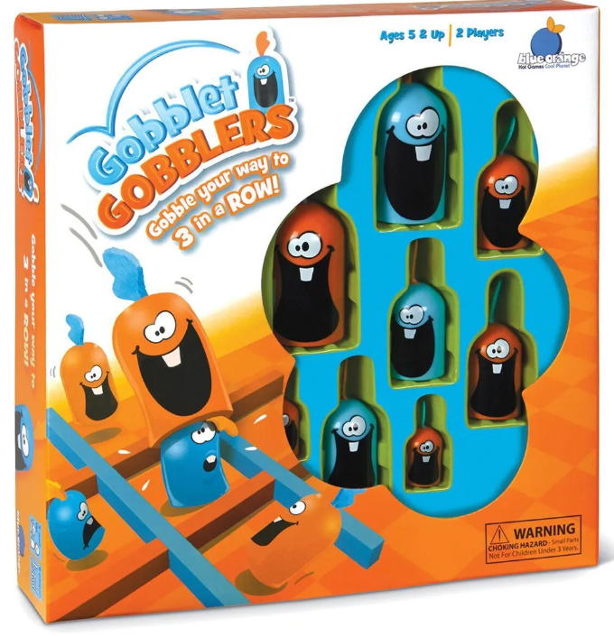
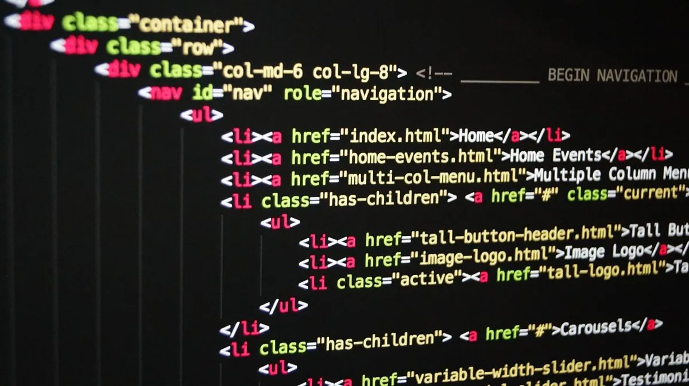
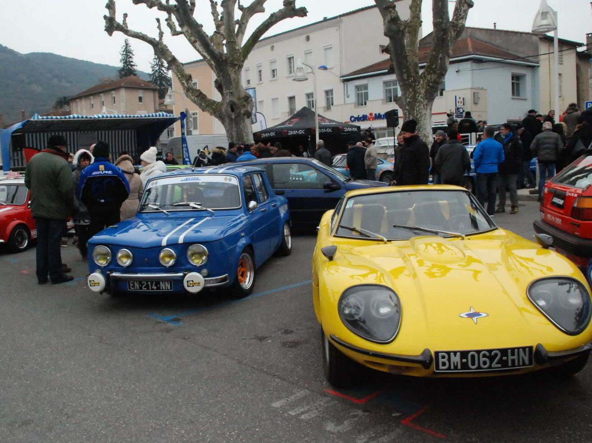

Recherche alternance

Etudiant de 18 ans, actuellement en première année de BUT Informatique au sein de l’ IUT de Caen / IFS, je souhaite me réorienter vers un BTS SIO option Systèmes et Réseaux (SISR) afin de travailler en alternance. J’aspire à accéder au monde professionnel afin de développer des compétences dans le but de me donner les clés pour exercer à l’avenir le métier d’Administrateur systèmes et réseaux. Je suis désormais à la recherche d’un contrat d’apprentissage d’une durée de deux ans de septembre 2023 à juin 2025.
Projet
Virtualisation
Réalisation d'un "Dualboot" en réseau, il s'agissait de préparer une grande quantité d'ordinateur pour un client selon son cahier des charges, notamment les composantes des l'ordinateurs, mais aussi les logiciels,
il était aussi inscrit dans le cahier des charges que les ordinateurs devaient posséder un dualboot.
Tout cela devant être effectué via proxmox afin que tous les ordinateurs
puissent être configuré en même temps et sous un coût restreint pour chaque ordinateur.
Usage de "VirtualBox","Proxmox", montage / choix composant d'ordinateur, choix de logiciels et de machine virtuel
Gobblet Gobblers

Réalisation d'un jeu de plateau nommé "Gobblet gobblers" selon un cahier des charges données à l'avance, avec demande inopinée du client, le jeu de plateau est un jeu de dames complexifié car celui-ci se joue en 3D contrairement à son homologue se jouant en 2D.
Nous avons réalisé ce jeu en langage C.
Jeu de la vie

Afin d'apprendre le langage C, nous avons effectué d'autres projets, notamment " le jeu de la vie " ou " Conway's Game of life".
Il s'agit d'un jeu d'aspect simple mais en réalité assez complexe, avec un système de "cellule morte" et de "cellule vivante", selon le nombre de cellules voisines, les cellules vivantes auront donc la possibilité de se déplacer ou non, le mathématicien a
son origine s'est rendu compte que son automate était capable de produire des motifs (répétitifs ou non) très impressionnants en partant seulement de ses deux simples règles.
Effectuer en langage C.
Site internet

Réalisation d'un site Internet afin de vendre des produits commerciaux divers ou encore d'y déposer des listes de recette gastronomique.
Utilisation du HTML/CSS/Javascript
Ergonomie
Réalisation d'interface vers l'utilisateur selon un cahier des charges, il est nécessaire de créer une interface d'utilisation simple envers le client, il faut que cela soit intuitif et adapté au besoin.
Ici il fallait créer une interface de connexion / inscription menant vers un site internet crée au préalable.
Utilisation de WinDesign
À propos de moi
Mes passions
Les voitures

Je dirais que c'est une passion qui remonte à très loin dans ma vie. Depuis que je suis tout petit, j'ai toujours été fasciné par les voitures, leur design, leur performance et leur technologie. Je suis toujours passionné de voitures aujourd'hui et je continue de suivre de près l'industrie automobile. Je pense qu'à mes yeux, les voitures représentent bien plus qu'un simple moyen de transport, ma préférence va aux BMW.
Cybersécurité
Depuis le lycée, J'ai toujours été curieux de savoir comment les ordinateurs et les réseaux fonctionnent, comment les données sont stockées et transférées, et comment les gens peuvent exploiter les failles de sécurité pour accéder à des informations sensibles.
Je suis également fasciné par la complexité et la sophistication des technologies de sécurité, tel que les pare-feu, les antivirus, les systèmes de détection d'intrusion et les techniques de cryptage. La cybersécurité est un domaine en constante évolution, ce qui signifie que je suis toujours en train d'apprendre de nouvelles choses et de découvrir de nouvelles technologies. Et c'est cette constante évolution qui me passionne.
Mes loisirs
Jeux vidéo
J'ai toujours été attiré par une grande variété de genres de jeux vidéo, notamment les jeux d'action, les jeux de rôle, les jeux de stratégie,
Cette passion m'auras permis d'obtenir des compétences en anglais, grâce à la communication en jeux, mais aussi d'obtenir des qualités critiques.
Mais ce qui m'impressionne le plus, c'est de constamment voir l'évolution du jeux video et son impact sur l'industrie. Ce petit divertissement évoluant tellement, qu'il permet aux autres industries d'améliorer son matériel, ceci grâce à l'évolution constante des technologies orientés vers le jeux video (bien sûr pas complétement mais celui-ci contribue).
Contact
Ou contactez moi via :